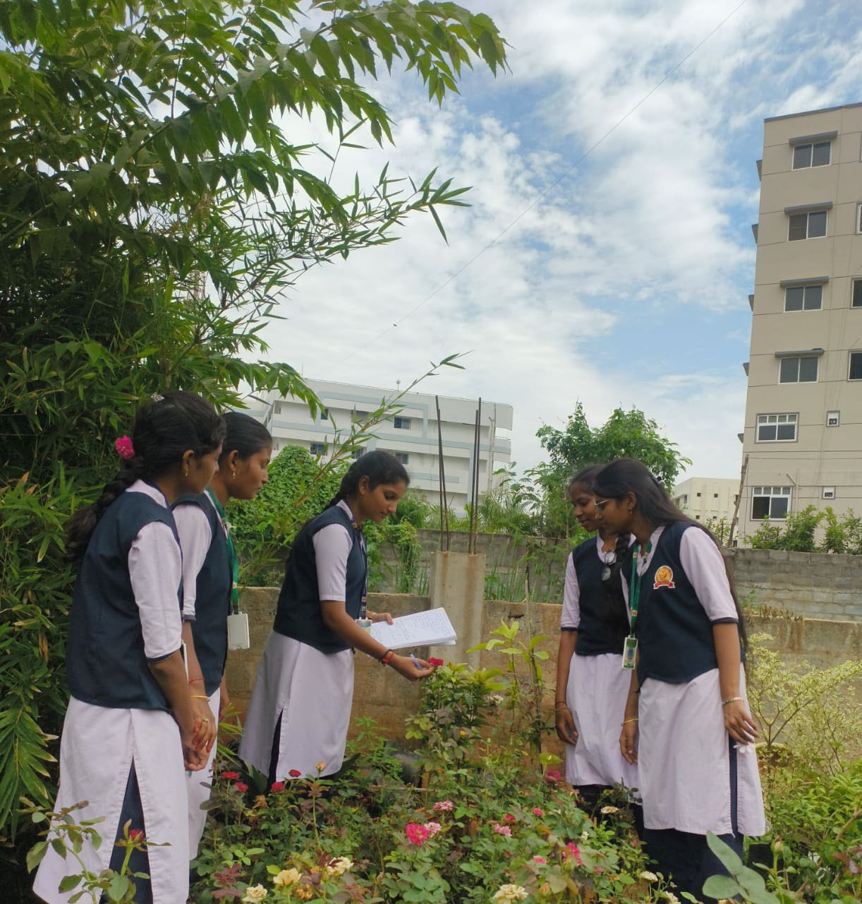
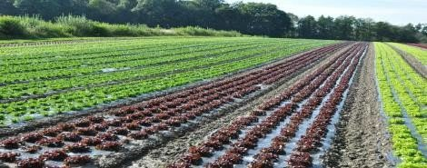
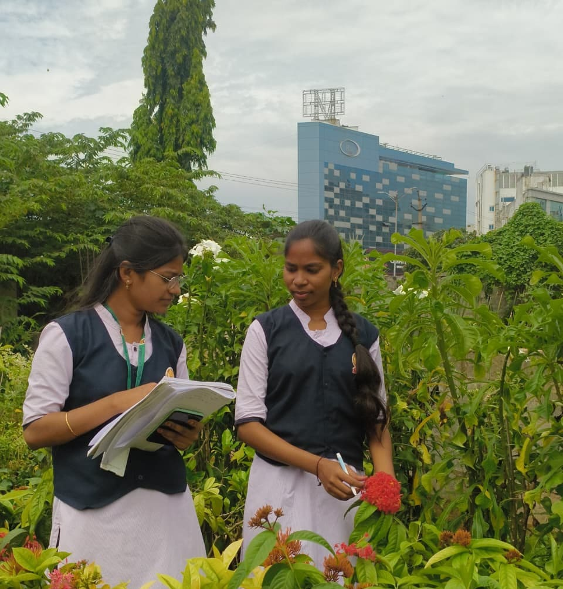
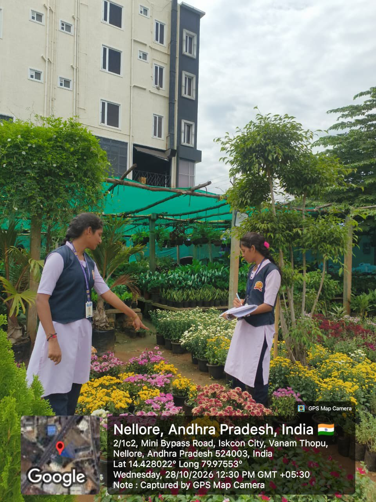
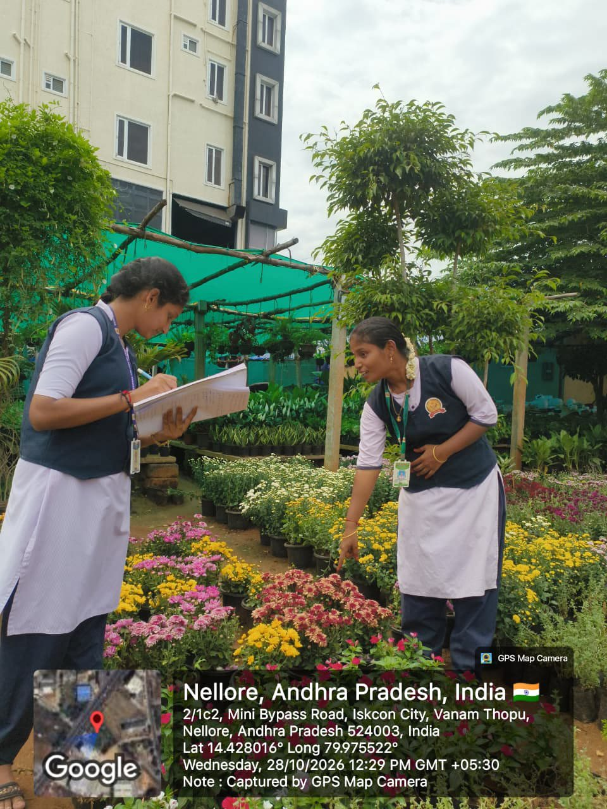
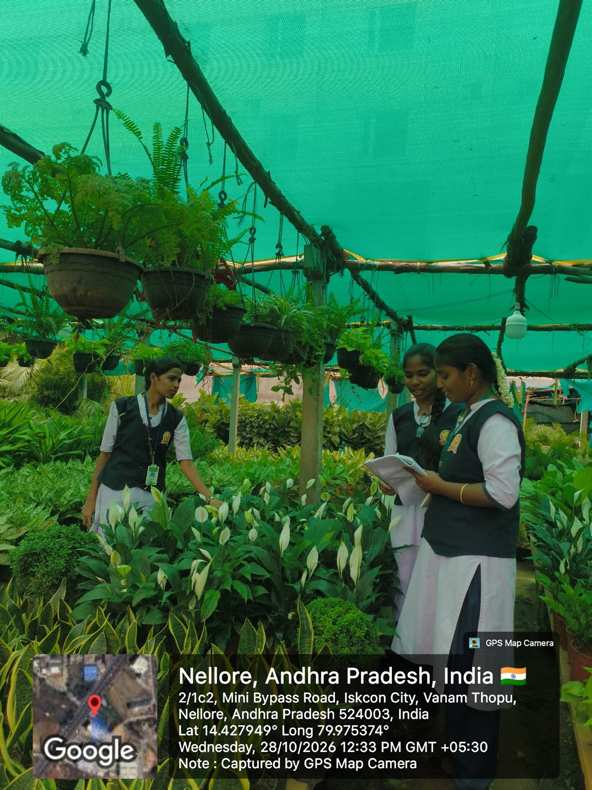
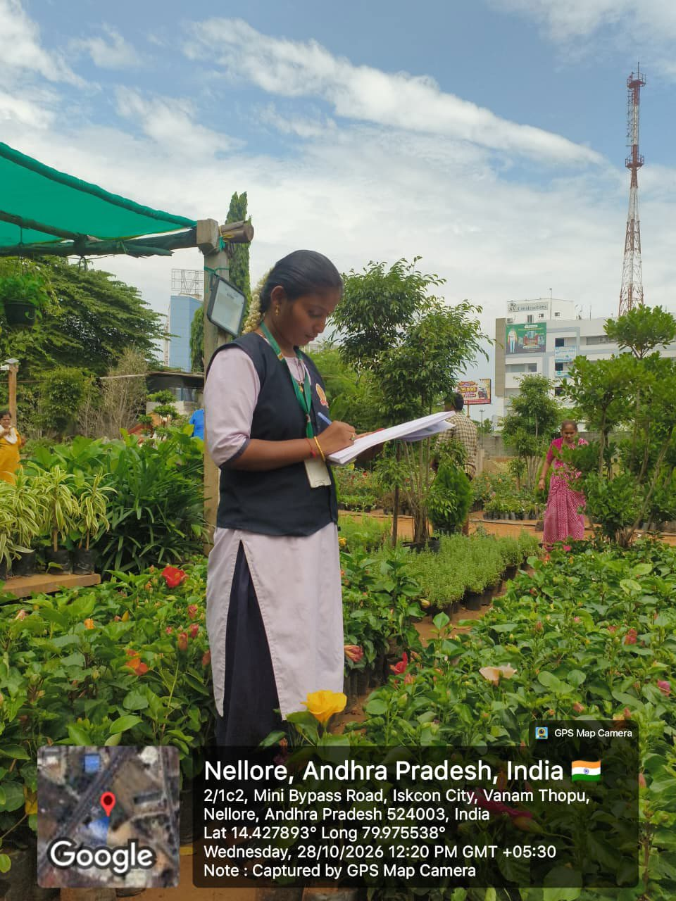

Plant care
Seed sowing, transplanting, pruning, staking and monitoring plant growth.
A community horticulture journey, paired with a simple Arduino-powered distance detector. Two projects. One spirit of learning and practical problem-solving.

This website presents the two topics documented in the project report: a community service project focused on horticulture and a technical mini project titled Ultrasonic Distance Detector Using Arduino.
Exploring plant cultivation, sustainable practices and the everyday challenges faced by growers in the community.

THE GROWING SPACE / FIELD OBSERVATIONHorticulture is the science and practice of cultivating fruits, vegetables, flowers and other useful plants. It supports nutrition, livelihoods, greener surroundings and sustainable use of natural resources.
The community service work involved observing cultivation practices, interacting with farm workers and nursery staff, and understanding the needs of the local habitation.
See the field activities ↗Seed sowing, transplanting, pruning, staking and monitoring plant growth.
Soil preparation, organic manure, mulching and efficient irrigation practices.
Observing pests and nutrient deficiencies and learning organic control methods.
Sharing practical awareness about kitchen gardens, composting and water conservation.
The report records a six-week activity schedule, alongside an eight-week community service programme. These are key stages described in the activity plan.
Soil preparation, irrigation setup, seed procurement, sowing and transplanting seedlings.
Weed control, soil fertility observation, pruning, staking and irrigation scheduling.
Organic pest control, mulching, foliar feeding and growth measurements.
Harvesting mature crops, recording yield and checking post-harvest quality.
Post-harvest handling, reviewing expenses and revenue, and planning the next cycle.
Plot maintenance, weed and pest management, soil moisture care and final review.

Problems identified through observation and discussions with farmers, nursery workers and residents.
Limited irrigation water during dry months and water loss through flood irrigation.
Limited soil testing awareness can lead to incorrect or excessive fertiliser use.
Heavy use of chemical pesticides can affect soil, beneficial insects and human health.
Inadequate storage, packing and transport facilities can reduce produce quality.
Photographs extracted from the supplied Community Service Project report.






A low-cost system that measures the distance to an object using ultrasonic waves, displays the reading on an LCD and activates a buzzer when an object comes too close.
The sensor sends ultrasonic pulses and listens for the returning echo. Arduino measures the echo time and calculates the distance.
Move the slider to change the simulated object distance. The warning activates below the 20 cm threshold described in the report.
Interactive demonstration only — not connected to physical hardware.duration = pulseIn(echoPin, HIGH);
distance = duration * 0.0343 / 2;
lcd.setCursor(0, 1);
lcd.print("Dist: ");
lcd.print(distance);
lcd.print(" cm ");
digitalWrite(buzzer, distance < 20 ? HIGH : LOW);Excerpt based on the Arduino program included in the project report.
The horticulture project developed practical understanding of cultivation, soil and water management, plant protection and community interaction. The Arduino mini project demonstrated how sensors and a microcontroller can be combined to measure distance and provide a warning.